¿QUÉ ES RWBY?
RWBY es una serie de animación creada por Monty Oum y producida por Rooster Teeth. Ambientada en un mundo ficticio llamado Remnant, sigue a un grupo de jóvenes cazadores y cazadoras que luchan contra criaturas de la oscuridad conocidas como Grimms. La serie se caracteriza por su estilo visual distintivo, inspirado en el anime, y su enfoque en la acción y la aventura. Los personajes principales son Ruby Rose, Weiss Schnee, Blake Belladonna y Yang Xiao Long, quienes forman el equipo RWBY.
CONOCE A SU PROTAGONISTAS
-
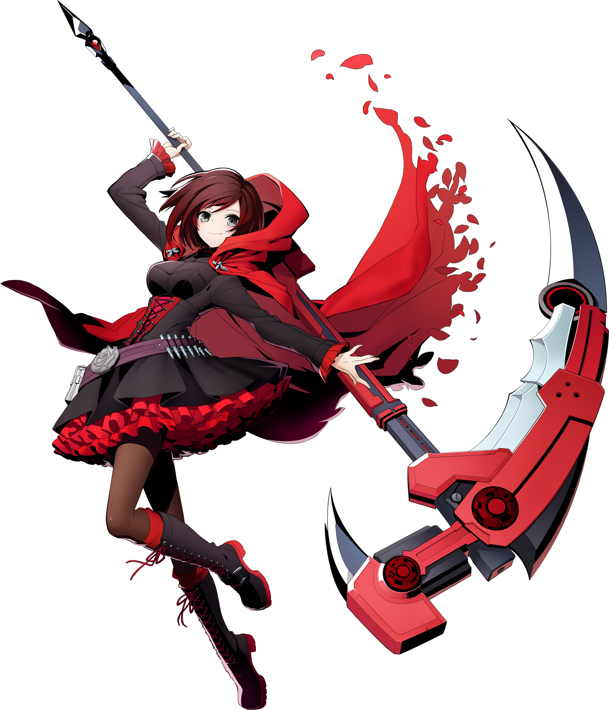
RUBY ROSE
Líder del equipo RWBY. La protagonista de la serie, de 16 años, viene de una pequeña isla de Vale llamada Patch y es la media hermana menor de Yang. Su arma es una guadaña/rifle personalizada de alto impacto llamada Crescent Rose. Su primera aparición en la serie es cuando es asaltada en una tienda por los hombres de Junior a cargo de Roman Torchwick. Ruby decidió luchar contra ellos sin saber que el director de Beacon la estaba observando. Él le ofrece entrar a su academia, a pesar de que normalmente solo admite a alumnos a partir de 17 años. Su semblanza es velocidad, que la hace moverse extremadamente rápido. Ruby eligió el camino como cazadora para convertirse algún día en un héroe como los de los cuentos que Yang le leía de pequeña. Ruby está basada en Caperucita Roja.
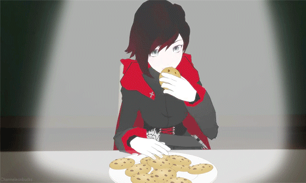 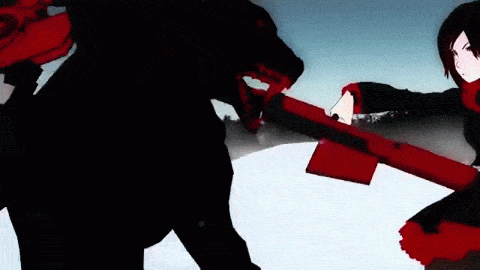 -
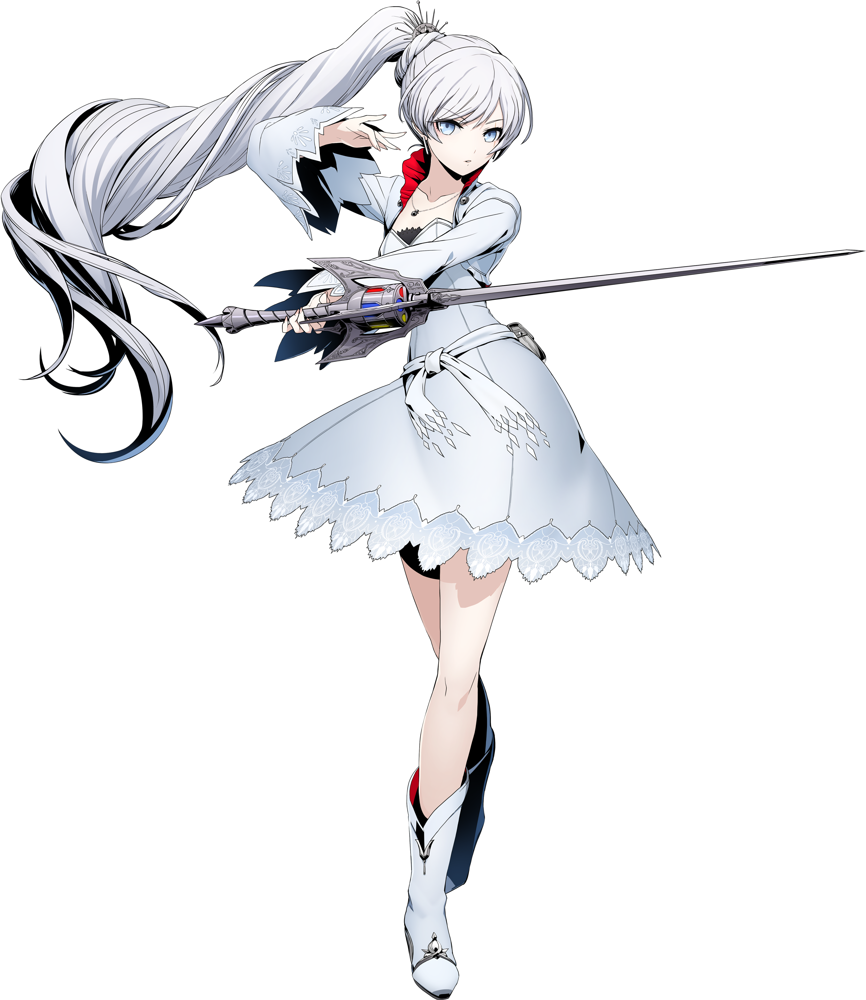
WEISS SCHNEE
Es la heredera de la Compañía Dust Schnee, la compañía de polvo más grande de Remnant. Tiene un carácter altivo y es una persona mandona, tan destacables son estos rasgos que todo el mundo se refiere a ella como "reina de hielo". Su arma es una espada de esgrima llamada Myrthenaster, que tiene en su mango un sistema de revólver con varios cristales de polvo con los cuales se cambia el elemento que usa el poder de la espada y sus propias habilidades. La semblanza de Weiss son los glifos, símbolos que ella utiliza para obtener diversas habilidades como defensa, aceleración, rebote, velocidad y, si se usa polvo con la habilidad, puede crear símbolos según el polvo utilizado. Weiss eligió su camino como cazadora porque quiere convertirse en una buena líder para la compañía de Polvo Schnee de su familia, y no quiere seguir los pasos de su padre.
 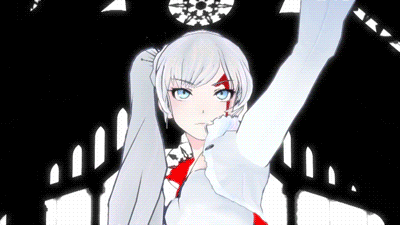
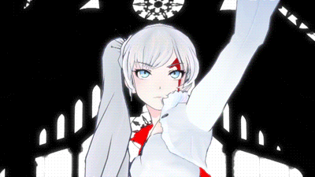
-
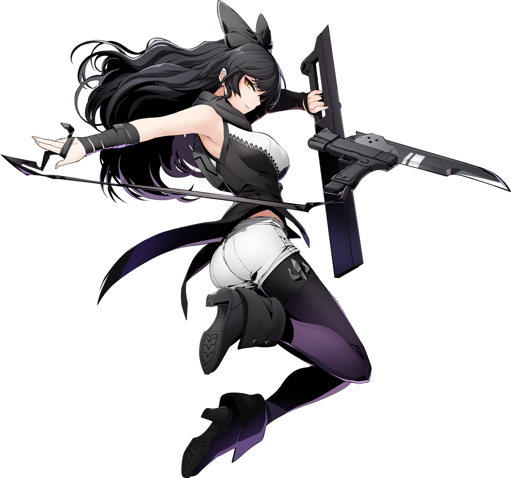
BLAKE BELLADONNA
Blake es una chica misteriosa. Tiene un carácter más bien apático, antisocial y frío. Al final del Primer Volumen se descubre que es una fauno. Tiempo atrás perteneció a la organización del Colmillo Blanco. Su arma es una espada/katana/pistola transformable con látigo llamada Gambol Shroud. En sus días como miembro del Colmillo Blanco, fue compañera de Adam Taurus. Su compañera actual es Yang. La semblanza de Blake es la sombra, que le permite crear sombras de sí misma como señuelo para el enemigo. Hasta ahora es el único estudiante de Beacon que ha accedido a la academia sin haber entrenado antes en una academia menor. Eligió su camino como cazadora porque consideraba a estos un ejemplo a seguir, tratándose de personas nobles que defendían la justicia y libraban a la gente del mal y la corrupción.
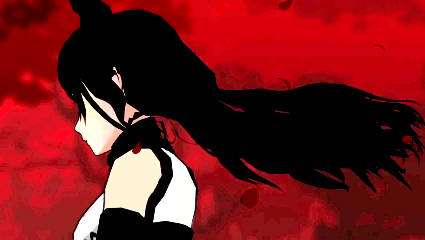 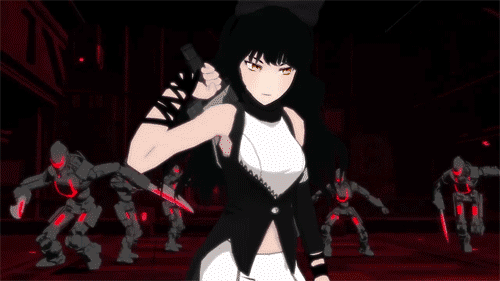 -
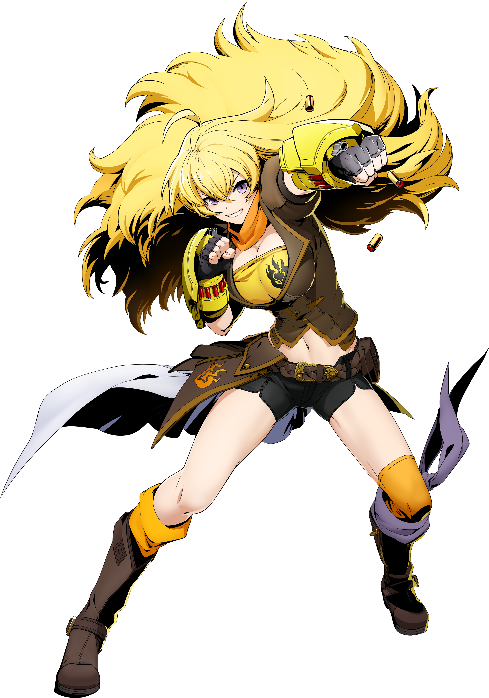
YANG XIAO LONG
Yang es la media hermana mayor de Ruby. Es una chica rubia e hiperactiva que odia que nadie toque su pelo. Tiene un carácter amable y enérgico. Su compañera es Blake. Sus armas son sus dos guantes llamados Ember Celica, que a la hora de luchar se extienden y cubren sus manos de Yang, convirtiéndose en puños reforzados, que además disparan balas, lo que aumenta el impulso de los golpes de Yang. Su semblanza le permite absorber todo el daño del enemigo y cuando ya está muy debilitada libera toda la energía absorbida y es capaz de asestar golpes mucho más potentes, lo que va bien con sus armas y estilo de combate. Como efecto adicional, su semblanza envuelve su pelo en llamas y sus ojos se vuelven de color rojo. Yang es la única que no elige ser cazadora por una razón concreta, según ella, solamente busca la aventura, y si en el camino puede ayudar a la gente, sería como una doble victoria.
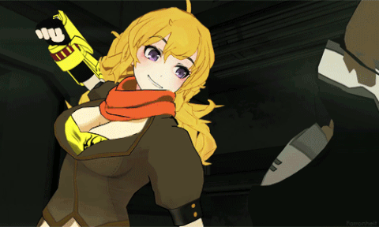 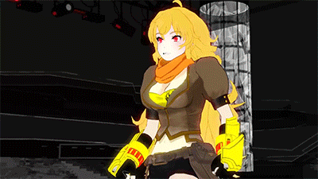
NOTICIAS DESTACADAS
RWBY Encuentra un Nuevo Hogar
VIZ Media adquirió RWBY de Warner Bros, anunció la compañía. El propietario de RWBY, Rooster Teeth, cerró a principios de este año después de esfuerzos fallidos por vender la división como una unidad. Ahora Warners está vendiendo las propiedades individuales de Rooster Teeth, de las cuales RWBY era probablemente la más grande. Warner vendió Crunchyroll, el otro activo importante de esa adquisición, en 2021.
RWBY Arrowfell Ahora Disponible en Crunchyroll Game Vault!
Crunchyroll Game Vault ha dado la bienvenida a una nueva incorporación emocionante: el juego de acción y aventuras "RWBY Arrowfell".Este título ofrece a los fans una experiencia inmersiva y dinámica con sus personajes favoritos.
RWBY Volume 9 Beyond - Capitulo 4: Boba
"Boba" es el cuarto y último capítulo de RWBY Volume 9: Beyond. Fue estrenado en Rooster Teeth el día 27 de abril.
VER SERIE
VOLUMEN 1
E01 - Ruby RoseE02 - The Shinning Beacon (1)
E03 - The Shinning Beacon (2)
E04 - The First Step (1)
E05 - The First Steo (2)
E06 - The Emerald Forest (1)
E07 - The Emerald Forest (2)
E08 - Players and Pieces
E09 - The Badge and The Burden (1)
E10 - The Badge and The Burden (2)
E11 - Jaunedice (1)
E12 - Jaundice (2)
E13 - Forever Fall (1)
E14 - Forever Fall (2)
E15 - The Stray
E16 - Black and White
VOLUMEN 5
E01 - Welcome to HavenE02 - Dread in the Air
E03 - Unforeseen Complications
E04 - Lighting the Fire
E05 - Necessary Sacrifice
E06 - Known by It's Song
E07 - Rest and Resolutions
E08 - Alone Together
E09 - A Perfect Storm
E10 - True Colors
E11 - The More the Merrier
E12 - Vault of the Spring Maiden
E13 - Downfall
E14 - Haven's Fate
VOLUMEN 9
E01 - A Place of Particular ConcernE02 - Altercation at the Auspicious Auction
E03 - Rude, Red, Royal
E04 - A Cat Most Curious
E05 - The Parfait Predicament
E06 - Confessions within Cumulonimbus Clouds
E07 - The Perils of Paper Houses
E08 - Tea Amidst Terrible Trouble
E09 - A Tale Involving a Tree
E10 - Of Solitude and Self
JUEGOS
RWBY: GRIM ECLIPSE
Prepárate para una intensa acción combatiendo a los Grimm a través de los lugares conocidos de Remnant y nuevas zonas nunca antes vistas en la serie. ¡Elige a tu personaje y juega en esta aventura como Ruby, Weiss, Blake y Yang explorando nuevas historias y enfrentándote a nuevos tipos de Grimm y a un nuevo villano!

RWBY: ARROWFELL
¡Adéntrate en una nueva aventura de RWBY! Cambia al momento entre las cuatro integrantes del Equipo RWBY y utiliza cada una de sus características armas y apariencias para luchar contra las criaturas de Grimm, así como otros enemigos, en esta historia que forma parte del canon y que se sitúa durante el volumen 7 .